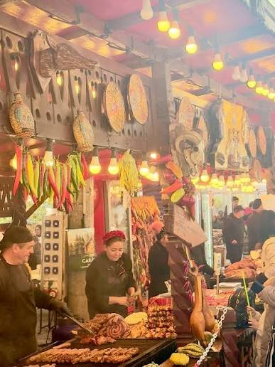
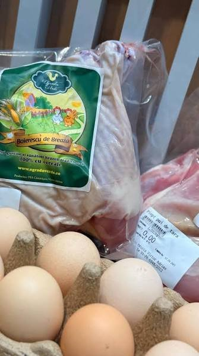

Nu trebuie să cărați provizii de acasă: magazinele și restaurantele din Breaza sunt la câțiva pași de vilă, iar bucătăria completă vă lasă să gătiți în ritmul vostru.

Unul dintre marile avantaje ale Casei Rodica este că nu te obligă la compromisuri: ai o bucătărie complet utilată pentru mesele în grup, dar și magazine și restaurante aproape, pentru zilele în care preferi să nu gătești.
În apropierea vilei găsești magazine locale și un Mega Image, așa că îți aduci doar ce îți place să gătești. Bucătăria de la Casa Rodica este dotată pentru grupuri mari, cu tot ce trebuie pentru mic dejun, prânz și cine în familie.
Pentru sejururile mai lungi, această apropiere de magazine face diferența: reaprovizionarea este simplă, fără drumuri până în oraș.
Dacă nu ai chef să gătești, se poate comanda de la restaurantele din Breaza. La cerere, îți recomandăm parteneri locali de catering, un pachet de mic dejun sau un grătar pregătit — ideal când vrei să te bucuri de timp cu ai tăi, nu de vase.
Foișorul cu grătar și piscina cu bar transformă mesele în adevărate momente de socializare, indiferent de sezon.

Zona Prahovei este bogată în produse de casă — brânzeturi, miere, dulcețuri, fructe de sezon. Un sejur la Casa Rodica este o ocazie bună să le descoperi, fie din magazinele locale, fie prin recomandările gazdelor.
Bucătăria complet utilată invită la mese în grup: un mic dejun lung pe terasă, un prânz gătit împreună și o cină la foișor, lângă grătar. Pentru serile speciale, crama și livingul cu semineu creează atmosfera potrivită.
Dacă preferați să nu gătiți, comanda de la restaurantele din Breaza sau un pachet de catering rezolvă totul — voi vă bucurați de timp, nu de vase.
Zona Prahovei este generoasă cu produse de casă: brânzeturi, miere, dulcețuri și fructe de sezon. Un sejur la Casa Rodica este o ocazie bună să le descoperi, direct din magazinele locale sau prin recomandările gazdelor.

Da — magazine locale și un Mega Image sunt la câțiva pași de vilă, ideale pentru reaprovizionare.
Da, se poate comanda de la restaurantele din Breaza. La cerere, recomandăm și parteneri de catering sau un grătar pregătit.
Da, este utilată pentru mese în grup — cu tot ce trebuie pentru mic dejun, prânz și cină.
Casa Rodica
Bucătărie completă, foișor cu grătar și recomandări locale — voi alegeți ritmul, noi avem grijă de rest.
Verifică disponibilitatea